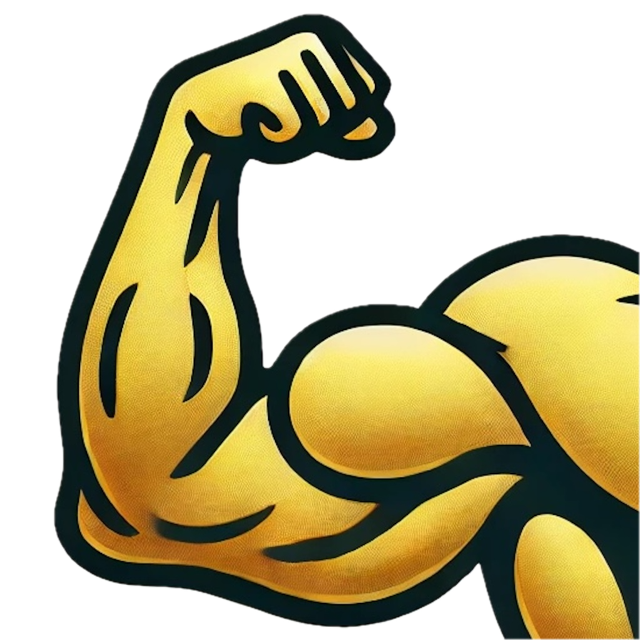

Golden Bicep
An iOS workout tracker. Log your sessions, track your body measurements, and watch your progress on beautiful charts.

An iOS workout tracker. Log your sessions, track your body measurements, and watch your progress on beautiful charts.